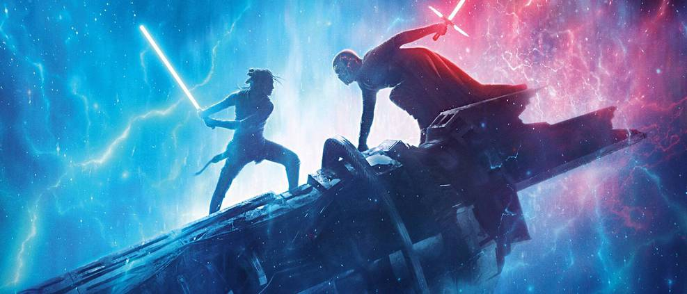

Star Wars | Trilogia nova “levará saga para o futuro”, confirma CEO
Publicado em: 26 de fevereiro de 2025
A Lucasfilm anunciou oficialmente uma nova trilogia de Star Wars, que promete levar a saga para um futuro emocionante. O CEO da Disney, Bob Iger, confirmou a notícia durante uma conferência de imprensa, afirmando que a nova trilogia será "um marco na história da franquia".
A nova trilogia será desenvolvida por Rian Johnson, diretor de Star Wars: Os Últimos Jedi, e promete explorar novos territórios da galáxia, com personagens inéditos e histórias que se passam décadas após os eventos de Star Wars: A Ascensão Skywalker.
Kathleen Kennedy, presidente da Lucasfilm, comentou: "Estamos muito animados com essa nova direção. Rian Johnson tem uma visão única e criativa, e estamos confiantes de que ele trará algo especial para os fãs."
Ainda não foram revelados detalhes sobre o enredo ou o elenco, mas rumores sugerem que a nova trilogia pode incluir personagens icônicos da saga, como Rey e Finn, interpretados por Daisy Ridley e John Boyega, respectivamente.
A primeira parte da trilogia está programada para estrear em 2027, com as sequências previstas para 2029 e 2031. Enquanto isso, os fãs podem esperar por mais novidades nos próximos meses.